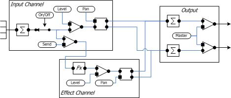
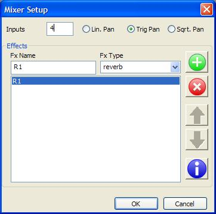
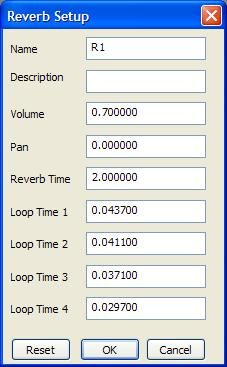
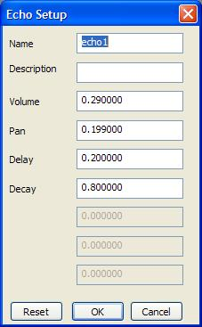

The volume command in Notelist can be used to balance the volume levels between different voices. Since each Mixer input channel can combine multiple sounds, you can send all voices through one channel if you don't need any panning or other Mixer effects. More commonly, the mixer is configured with one mixer input channel for each voice. The Notelist volume command can then be used to create crescendo and decrescendo while the Mixer balances voices and provide panning, reverb, etc. However, each Mixer input adds processing time during sound generation and you should only configure as many inputs as you truly need. In general, you need one Mixer input channel for each separate pan setting. All instruments that have the same pan position can be combined into a single channel. Likewise, if you need multiple reverb effects, you can assign voices that share the same effect into one input channel.

The diagram shows one input channel and one effects channel along with the output.
Each input channel acts as a small mixer in its own right. This allows multiple score voices to be played into one channel if desired, but also insures that overlapping notes in the same channel are properly combined. Each channel can be turned off independently of other inputs. This makes it easy to preview only some voices and suppress others without having to change the mixer level settings to do so. The input channel level controls the amount of the input signal sent to the output. The pan value controls how much of the signal is applied to the left and right outputs. The send level determines how much of the input signal is sent through an effects unit. There is a separate send level for each effects unit.
Each effects unit combines the outputs from the send controls into a single value, applies a level and panning control to the output of the processor and adds the signal to the left and right outputs. Three effects types are currently available: reverb, flanger, and echo. Multiple units of each type can be defined, each with different settings, with the input send level used to determine how much of the input is sent to each effects unit.
The mixer is configured with the mixer setup dialog. Right-click on the Mixer project item and select properties to access the mixer setup dialog.
Enter the desired number of input channels in the Inputs entry field. Select the panning type. Each panning type provides a slightly different panning effect. The pan setting ranges from [-1,+1]. and produces the left and right multipliers shown in the table below. Linear panning results in the "hole in the middle" effect where the sound appears to move away from the listener as it moves toward the center. Trig panning (taking the sin of the pan setting) produces a more constant pan effect. Square root panning also produces a smooth panning, but with a different rate of fall-off as the sound moves from side to side.
| Linear | Sin | Square Root | ||||
| Pan Setting | Left Multiplier | Right Multiplier | Left Multiplier | Right Multiplier | Left Multiplier | Right Multiplier |
| 1.00 | 1.000 | 0.000 | 0.707 | 0.000 | 0.707 | 0.000 |
| 0.50 | 0.750 | 0.250 | 0.653 | 0.271 | 0.612 | 0.354 |
| 0.25 | 0.625 | 0.375 | 0.588 | 0.383 | 0.559 | 0.433 |
| 0.00 | 0.500 | 0.500 | 0.500 | 0.500 | 0.500 | 0.500 |
To add an effects unit, enter a name in the Fx Name input field and select the type in the Fx Type list. Press the + button to add the unit. The up and down arrows can be used to change the order. The X button will remove an effects unit.
Each effects unit is added as a child item under the Mixer item in the project view. Double click on an effects unit to change its properties.
|  | The reverb unit consists of four feedback delay lines and two allpass filters. The reverb time and the loop times of the delay lines can be changed using the properties dialog for the reverb unit. |
|
The flanger unit consists of a variable rate delay line combined with a low-frequency oscillator to move the delay tap back and forth. The mix parameter sets the amount of dry and wet signals applied at the output. The feedback parametet controls the amount of the delayed signal that is recycled through the delay line. The depth and center values control the length of the delay line. Both values are given in seconds. The delay time varies from center - depth/2 to center + depth/2. |
|  | The echo unit consists of a feedback delay line alone. The delay value sets the delay line length in seconds. The decay value sets the amount of time it takes for the signal to decay to -60dB. |
Note: all three effects units incorporate a feedback delay line. If the input level is too high, or the decay time is too long, continued input to the unit can create a positive feedback loop. Distorted sound will recirculate in the delay line indefinitely. If this happens, click the [Clear] button on the Mixer editor to clear all values from the effects units.